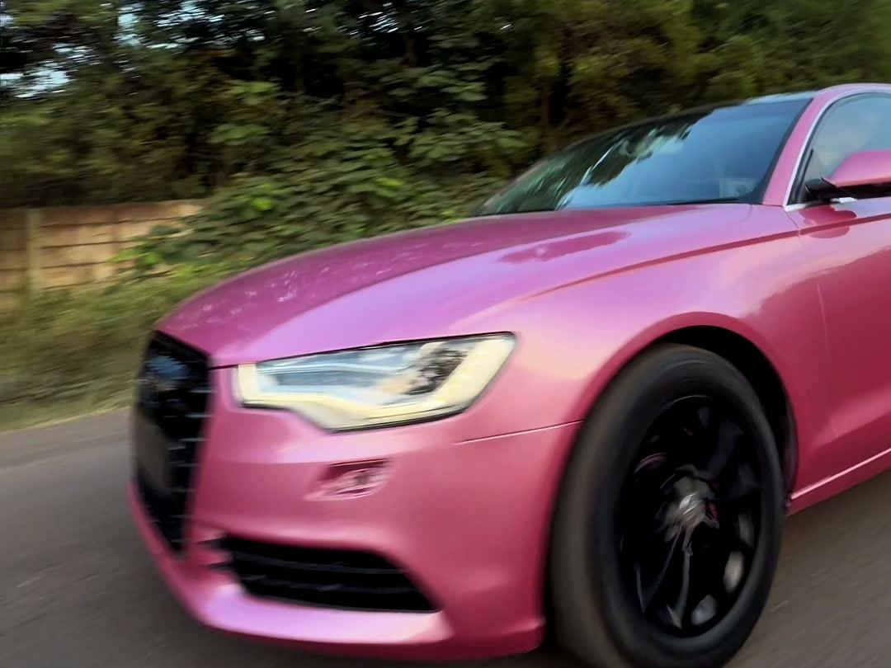
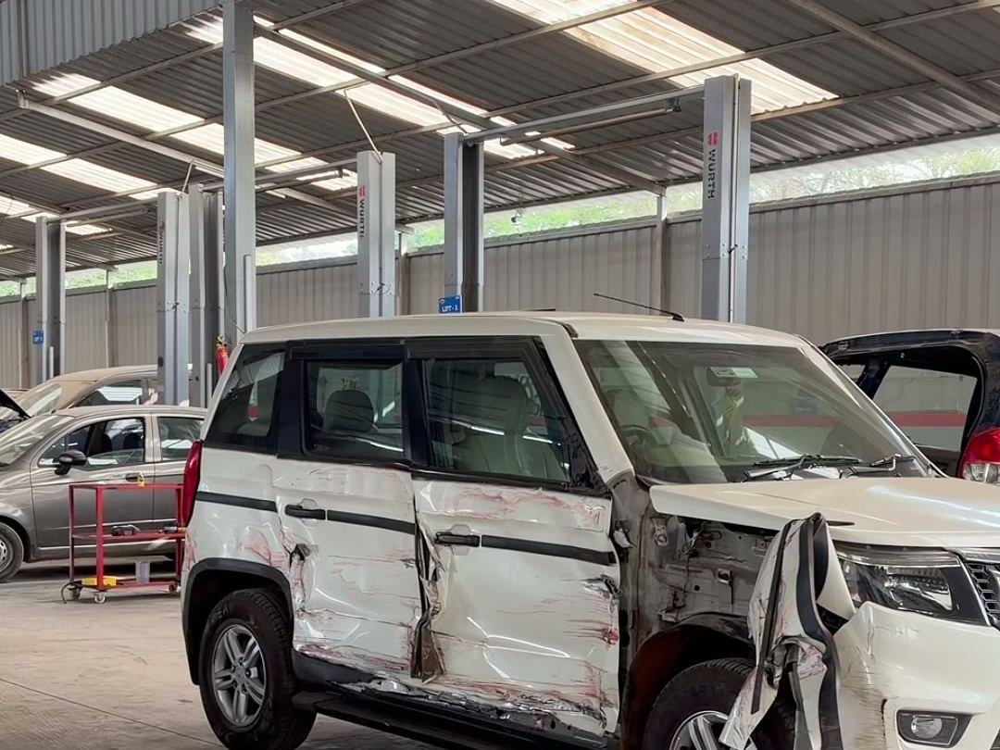

My front suspension had been knocking for months and two other places only changed the bushes. Here they road-tested it first, showed me the worn strut, and the noise is completely gone.
SuspensionPrashant DeshmukhErtiga · Nashik Road

Home / Reviews
Written by people who drive Nashik's roads every day. Filter by the kind of job below — suspension and servicing are what customers write about most.
My front suspension had been knocking for months and two other places only changed the bushes. Here they road-tested it first, showed me the worn strut, and the noise is completely gone.
SuspensionThe workshop is genuinely clean and organised, which says a lot. Tools in place, cars parked properly, and the staff actually explain what they are doing instead of rushing you off.
Periodic serviceAsked for the estimate in writing before starting and got it without any fuss. Final bill matched the quote — only the wiper blades were added, and they called me first.
BrakesTook my father's old Alto expecting to be told it isn't worth repairing. Instead they fixed what mattered, told me what could wait, and didn't push unnecessary work.
ElectricalAfter a minor accident I was dreading the insurance hassle. They dealt with the surveyor and the paperwork, the claim went through cashless, and I only paid the part my policy didn't cover.
Cashless insurance claimRear shockers were finished after a year of potholes. They quoted two options — genuine and OE grade — and let me decide instead of choosing for me. Ride feels new again.
SuspensionAC had stopped cooling just before summer. They found a leak instead of just filling gas, which is what the last place did twice. Cold air all through May.
AC serviceDropped the car at 10 in the morning and had it back the same evening, washed, with a list of what was done. For a full service that's quick by Nashik standards.
Periodic serviceSomeone scraped my bumper in a parking lot. The colour match came out better than I expected and they handled the insurance paperwork side of it too.
Denting & paintingI get my pre-purchase inspections done here now. They told me honestly that the second-hand car I was looking at had accident repair work — saved me a bad buy.
InspectionExperienced mechanics — you can tell from how quickly they identified the clunk in the rear. Came out on a road test with me rather than asking me to describe it twice.
SuspensionBattery kept dying overnight and nobody could find why. They traced the drain to a badly fitted accessory from an earlier shop and sorted it in one visit.
ElectricalIt's the most common thing customers want from any garage, and the thing most complaints come back to. So we made it the first step of every job rather than the last.
You get an itemised estimate — parts and labour written separately — before a single bolt is turned. If the job grows once we're inside, work stops and you get a call with the new number. No one at this workshop is allowed to add a line to your bill without your yes.

Book a slot this week — most routine jobs go out the same evening.